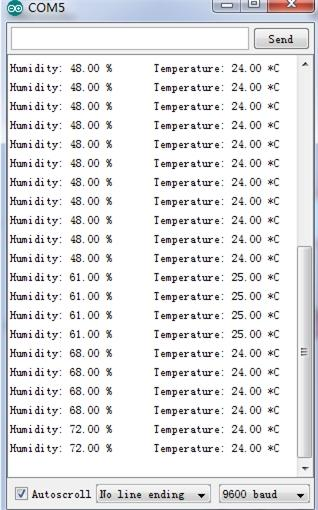
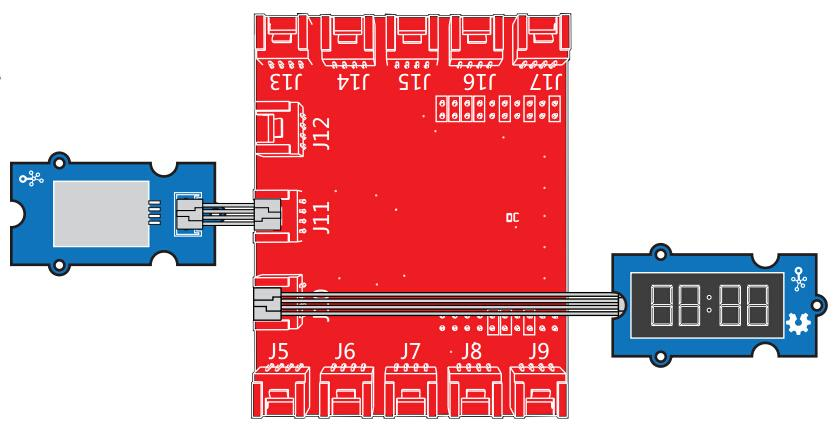

This is a multifunctional sensor that gives you temperature and relative humidity information at the same time. It utilizes a DHT11 sensor that can meet measurement needs of general purposes. It provides reliable readings when environment humidity condition in between 20% RH and 90% RH, and temperature condition in between 0°C and 50°C, covering needs in most home and daily applications that don't contain extreme conditions.

This demo is going to show you how to read temperature and humidity information from this Grove - Temperature and Humidity Sensor.

The Temperature and Humidity sensor is connecting to analog port A0 of Grove - Base Shield.
// Example testing sketch for various DHT humidity/temperature sensors // Written by ladyada, public domain #include "DHT.h" #define DHTPIN A0 // what pin we're connected to // Uncomment whatever type you're using! #define DHTTYPE DHT11 // DHT 11 //#define DHTTYPE DHT22 // DHT 22 (AM2302) //#define DHTTYPE DHT21 // DHT 21 (AM2301) // Connect pin 1 (on the left) of the sensor to +5V // Connect pin 2 of the sensor to whatever your DHTPIN is // Connect pin 4 (on the right) of the sensor to GROUND // Connect a 10K resistor from pin 2 (data) to pin 1 (power) of the sensor DHT dht(DHTPIN, DHTTYPE); void setup() { Serial.begin(9600); Serial.println("DHTxx test!"); dht.begin(); } void loop() { // Reading temperature or humidity takes about 250 milliseconds! // Sensor readings may also be up to A0 seconds 'old' (its a very slow sensor) float h = dht.readHumidity(); float t = dht.readTemperature(); // check if returns are valid, if they are NaN (not a number) then something went wrong! if (isnan(t) || isnan(h)) { Serial.println("Failed to read from DHT"); } else { Serial.print("Humidity: "); Serial.print(h); Serial.print(" %\t"); Serial.print("Temperature: "); Serial.print(t); Serial.println(" *C"); } }
Note: This Grove - Temperature and Humidity Sensor and our another product Grove - Temperature and Humidity Sensor Pro are sharing this library. No matter which product you are using, make sure that you have made the definition line of the sensor of your board into effect and commented out the definition lines of other specs. For example, the sensor used on Grove - Temperature and Humidity Sensor is DHT 11. So the definition part of the sensor spec should be:
#define DHTTYPE DHT11 // DHT 11 //#define DHTTYPE DHT22 // DHT 22 (AM2302) //#define DHTTYPE DHT21 // DHT 21 (AM2301)

Feeling the Environments (Temperature and humidity)

/* Grove-Temperature-Humidity Sensor Read value from grove-temperature-humidity sensor then display on grove-4-digital-display The circuit: * 4-digital-display attached to pin38 & pin39 (J14 plug on Grove Base BoosterPack) * sig pin of the Grove-Temperature-Humidity Sensor to the analog pin 24 (Grove connector J6) * one side pin (either one) to ground * the other side pin to +VCC * LED anode (long leg) attached to RED_LED * LED cathode (short leg) attached to ground * Note: Put your hands on Grove-Temperature-Humidity Sensor, both of the value will rise. 4-digital-display: |--------------------------| | temperature : humidity | |--------------------------| This example code is in the public domain. http://www.seeedstudio.com/wiki/Grove_-_Temperature_and_Humidity_Sensor_Pro */ #include "TM1637.h" #include "DHT.h" /* Macro Define */ #define CLK 39 /* 4-digital display clock pin */ #define DIO 38 /* 4-digital display data pin */ #define BLINK_LED RED_LED /* blink led */ #define TEMP_HUMI_PIN 24 /* pin of temperature&humidity sensor */ /* Global Varibles */ TM1637 tm1637(CLK, DIO); /* 4-digital display object */ DHT dht(TEMP_HUMI_PIN, DHT22); /* temperature&humidity sensor object */ int8_t t_bits[2] = {0}; /* array to store the single bits of the temperature */ int8_t h_bits[2] = {0}; /* array to store the single bits of the humidity */ /* the setup() method runs once, when the sketch starts */ void setup() { tm1637.init(); /* initialize 4-digital display */ tm1637.set(BRIGHT_TYPICAL); /* set the brightness */ tm1637.point(POINT_ON); /* light the clock point ":" */ dht.begin(); /* initialize temperature humidity sensor */ pinMode(RED_LED, OUTPUT); /* declare the red_led pin as an OUTPUT */ } /* the loop() method runs over and over again */ void loop() { int _temperature = dht.readTemperature(); /* read the temperature value from the sensor */ int _humidity = dht.readHumidity(); /* read the humidity value from the sensor */ memset(t_bits, 0, 2); /* reset array when we use it */ memset(h_bits, 0, 2); /* 4-digital-display [0,1] is used to display temperature */ t_bits[0] = _temperature % 10; _temperature /= 10; t_bits[1] = _temperature % 10; /* 4-digital-display [2,3] is used to display humidity */ h_bits[0] = _humidity % 10; _humidity /= 10; h_bits[1] = _humidity % 10; /* show it */ tm1637.display(1, t_bits[0]); tm1637.display(0, t_bits[1]); tm1637.display(3, h_bits[0]); tm1637.display(2, h_bits[1]); }
This example can Return temperature and humidity value,And show them on Grove - LCD RGB Backlight.Also print them on PC terminal.
# grovepi_lcd_dht.py
# dht(pin,module_type), change module_type number to use other kind of dht
# module_type:
# DHT11 0
# DHT22 1
# DHT21 2
# DHT2301 3
from grovepi import *
from grove_rgb_lcd import *
dht_sensor_port = 7 # Connect the DHt sensor to port 7
while True:
try:
[ temp,hum ] = dht(dht_sensor_port,1) #Get the temperature and Humidity from the DHT sensor
print "temp =", temp, "C\thumadity =", hum,"%"
t = str(temp)
h = str(hum)
setRGB(0,128,64)
setRGB(0,255,0)
setText("Temp:" + t + "C " + "Humidity :" + h + "%")
except (IOError,TypeError) as e:
print "Error"
cd Desktop/Applications/GrovePi/GrovePi LCD DHT/
sudo python grovepi_lcd_dht.py
Copyright (c) 2008-2016 Seeed Development Limited (www.seeedstudio.com / www.seeed.cc)